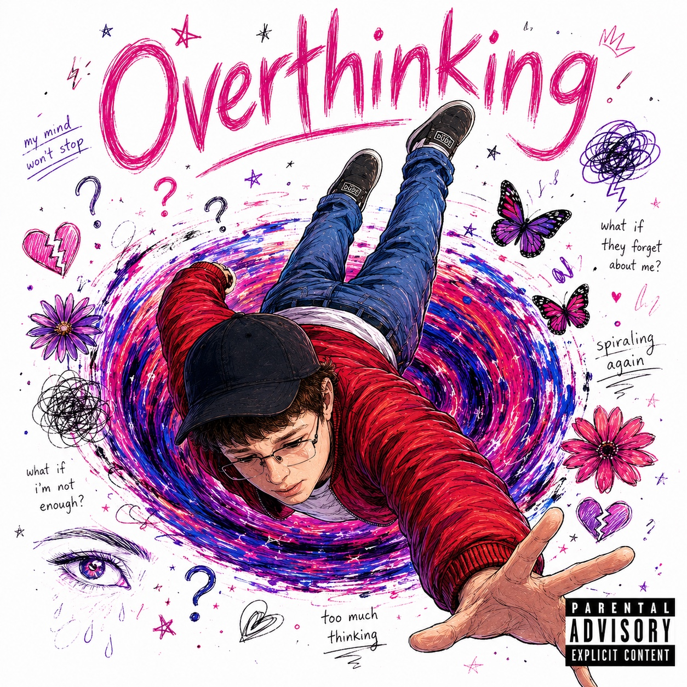

Lyrics
Overthinking
KingJJ • June 2026
Hate me, hate me, I know that you hate me I get it, I'm trash, that's just a known fact I'm sorry for them times I've done messed up But, girl, please don't ever let up I don't wanna let go, I'm starting to let go My mind then enters yet another spiral Washed up, damn how long is this cycle Get fucked off a curb (oh shit) I know that you heard (oh shit) Man, I'm jus’ psycho, haha Uh, what was I saying (oh yeah) I know I'm never gonna be the best But girl trust I would give you bliss I'd stop but my my mind can't rest Girl, I'm just here up for the test Damn already hurt How long has it been I was at a low But you gave me a hand I know I should be fine and dandy I should just move on, but man, me? Give an overthinker a piece of mind and They’ll just want that whole damn pie And man that ain't no lie But then she say bye And I'm left lying Felt like I'm dying Why am I trying Already tried disguising But there ain't any hiding (Man I thought she was my girl I'm sorry for all the mistakes I took my issues and add ‘em in So now its gone and man I'm in So much stress, its distress, what a mess) Man I'm jus’ a psycho